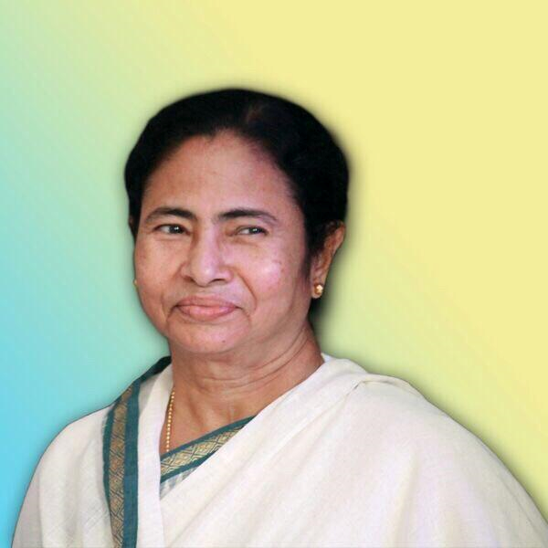

Narendra Modi
(BJP)
Narendra Damodardas Modi is an Indian politician serving as the 14th and current prime minister of India since 2014. He was the chief minister of Gujarat from 2001 to 2014 and is the member of Parliament for Varanasi.
- Born: September 17, 1950 (age 64), Vadnagar
- Spouse: Jashodaben Modi
- Education: Gujarat University (1983), University of Delhi (1978)
- Parents: Heeraben Modi, Damodardas Mulchand Modi
- Awards: CNN-IBN Indian of the Year

Rahul Gandhi
(INC)
Rahul Gandhi is an Indian politician and a member of the
Indian Parliament, representing the constituency of Wayanad, Kerala in the 17th Lok Sabha.
- Born: June 19, 1970 (age 44), New Delhi
- Full name: Rahul Gandhi
- Parents: Sonia Gandhi, Rajiv Gandhi
- Siblings: Priyanka Gandhi
- Education: Trinity College, Cambridge (1994–1995)
- Awards: CNN-IBN Indian of the Year in Politics

Mamata Banerjee
(TMC)
Mamata Banerjee is an Indian politician who is serving as the 9th and current Chief Minister of West Bengal since 2011, the first woman to hold the office.
- Born: 5 January 1955 (age 66 years), Kolkata
- Party: All India Trinamool Congress

Arvind Kejriwal
Arvind Kejriwal is an Indian politician and a former bureaucrat who is the current and 7th Chief Minister of Delhi since February 2015. He was also the Chief Minister of Delhi from December 2013 to February 2014, stepping down after 49 days of assuming power.
- Born: 16 August 1968 (age 52 years), Siwani
- Party: Aam Aadmi Party